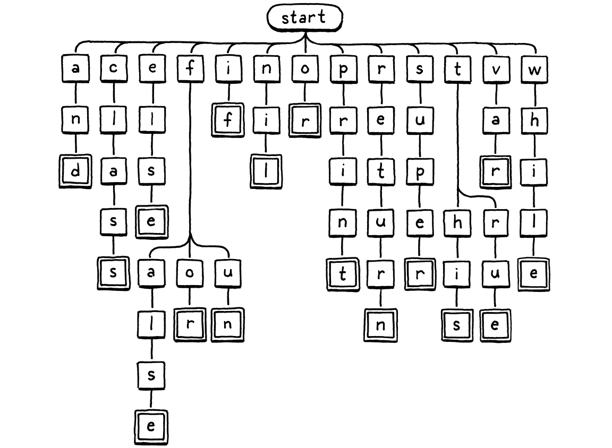
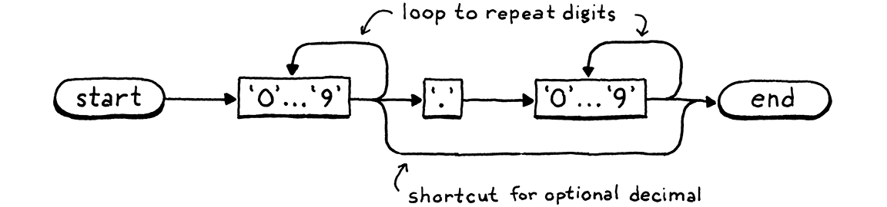

Scanning on Demand
Văn chương là những sắp đặt đầy tính cá nhân theo hàng ngang chỉ với hai mươi sáu ký hiệu ngữ âm, mười chữ số Ả Rập, và khoảng tám dấu câu.
Kurt Vonnegut, Like Shaking Hands With God: A Conversation about Writing
Trình thông dịch thứ hai của chúng ta, clox, có ba giai đoạn — scanner, compiler, và virtual machine. Một cấu trúc dữ liệu nối giữa mỗi cặp giai đoạn. Token chảy từ scanner sang compiler, và các chunk bytecode từ compiler sang VM. Ta đã bắt đầu hiện thực từ gần cuối với chunks và VM. Giờ, ta sẽ quay lại từ đầu và xây dựng một scanner tạo ra token. Trong chương tiếp theo, ta sẽ nối hai đầu này lại với nhau bằng bytecode compiler.

Tôi thừa nhận, đây không phải là chương thú vị nhất trong sách. Với hai bản hiện thực của cùng một ngôn ngữ, chắc chắn sẽ có sự trùng lặp. Tôi cũng đã lén thêm vào một vài điểm khác biệt thú vị so với scanner của jlox. Đọc tiếp để xem chúng là gì.
16 . 1Khởi động Interpreter
Giờ ta đang xây dựng phần front-end, ta có thể cho clox chạy như một interpreter thực thụ. Không còn những chunk bytecode viết tay nữa. Đã đến lúc có một REPL và khả năng tải script. Hãy bỏ hầu hết code trong main() và thay bằng:
int main(int argc, const char* argv[]) {
initVM();
in main()
replace 26 lines
if (argc == 1) { repl(); } else if (argc == 2) { runFile(argv[1]); } else { fprintf(stderr, "Usage: clox [path]\n"); exit(64); } freeVM();
return 0; }
Nếu bạn chạy executable mà không truyền đối số, bạn sẽ được đưa vào REPL. Một đối số dòng lệnh duy nhất sẽ được hiểu là đường dẫn tới script cần chạy.
Ta sẽ cần một vài system header, nên hãy khai báo hết ngay từ đầu.
add to top of file
#include <stdio.h> #include <stdlib.h> #include <string.h>
#include "common.h"
Tiếp theo, ta khởi động REPL.
#include "vm.h"
static void repl() { char line[1024]; for (;;) { printf("> "); if (!fgets(line, sizeof(line), stdin)) { printf("\n"); break; } interpret(line); } }
Một REPL “xịn” sẽ xử lý tốt input trải dài nhiều dòng và không giới hạn độ dài dòng một cách cứng nhắc. REPL này thì… hơi đơn sơ, nhưng vẫn đủ cho mục đích của ta.
Phần việc chính nằm trong interpret(). Ta sẽ nói tới nó sớm thôi, nhưng trước hết hãy xử lý việc tải script.
add after repl()
static void runFile(const char* path) { char* source = readFile(path); InterpretResult result = interpret(source); free(source); if (result == INTERPRET_COMPILE_ERROR) exit(65); if (result == INTERPRET_RUNTIME_ERROR) exit(70); }
Ta đọc file và execute chuỗi mã nguồn Lox thu được. Sau đó, dựa trên kết quả, ta đặt exit code cho phù hợp — vì ta là những người làm công cụ kỹ tính và quan tâm tới cả những chi tiết nhỏ như vậy.
Ta cũng cần giải phóng chuỗi mã nguồn vì readFile() cấp phát động và chuyển quyền sở hữu cho hàm gọi nó. Hàm đó trông như sau:
add after repl()
static char* readFile(const char* path) { FILE* file = fopen(path, "rb"); fseek(file, 0L, SEEK_END); size_t fileSize = ftell(file); rewind(file); char* buffer = (char*)malloc(fileSize + 1); size_t bytesRead = fread(buffer, sizeof(char), fileSize, file); buffer[bytesRead] = '\0'; fclose(file); return buffer; }
Giống nhiều đoạn code C khác, nó tốn nhiều công sức hơn bạn tưởng, nhất là với một ngôn ngữ được thiết kế riêng cho hệ điều hành. Phần khó là ta muốn cấp phát một chuỗi đủ lớn để đọc toàn bộ file, nhưng lại không biết kích thước file cho tới khi đọc nó.
Đoạn code này dùng mẹo kinh điển để giải quyết. Ta mở file, nhưng trước khi đọc, ta seek tới cuối file bằng fseek(). Sau đó gọi ftell() để biết ta đang cách đầu file bao nhiêu byte. Vì ta đã seek tới cuối, con số đó chính là kích thước file. Ta quay lại đầu file, cấp phát một chuỗi với kích thước đó, và đọc toàn bộ file trong một lần.
Xong rồi đúng không? Chưa hẳn. Những lời gọi hàm này, như hầu hết hàm trong thư viện chuẩn C, có thể thất bại. Nếu đây là Java, lỗi sẽ được ném ra dưới dạng exception và tự động unwind stack, nên ta thực ra không cần xử lý. Trong C, nếu không kiểm tra, chúng sẽ bị bỏ qua trong im lặng.
Đây không hẳn là cuốn sách dạy lập trình C tốt, nhưng tôi không muốn cổ vũ thói quen xấu, nên hãy xử lý lỗi cho đàng hoàng. Nó tốt cho ta, như ăn rau hay dùng chỉ nha khoa vậy.
May mắn là, nếu có lỗi, ta cũng không cần làm gì quá phức tạp. Nếu không đọc được script của người dùng, tất cả những gì ta có thể làm là báo cho họ và thoát interpreter một cách gọn gàng. Trước hết, có thể ta sẽ không mở được file.
FILE* file = fopen(path, "rb");
in readFile()
if (file == NULL) { fprintf(stderr, "Could not open file \"%s\".\n", path); exit(74); }
fseek(file, 0L, SEEK_END);
Điều này xảy ra nếu file không tồn tại hoặc người dùng không có quyền truy cập. Khá phổ biến — mọi người gõ sai đường dẫn suốt.
Lỗi này thì hiếm hơn:
char* buffer = (char*)malloc(fileSize + 1);
in readFile()
if (buffer == NULL) { fprintf(stderr, "Not enough memory to read \"%s\".\n", path); exit(74); }
size_t bytesRead = fread(buffer, sizeof(char), fileSize, file);
Nếu ta thậm chí không thể cấp phát đủ bộ nhớ để đọc script Lox, thì có lẽ người dùng còn nhiều vấn đề lớn hơn để lo, nhưng ta vẫn nên báo cho họ biết.
Cuối cùng, việc đọc chính nó cũng có thể thất bại.
size_t bytesRead = fread(buffer, sizeof(char), fileSize, file);
in readFile()
if (bytesRead < fileSize) { fprintf(stderr, "Could not read file \"%s\".\n", path); exit(74); }
buffer[bytesRead] = '\0';
Điều này cũng hiếm. Thực ra, các lời gọi fseek(), ftell(), và rewind() về lý thuyết cũng có thể thất bại, nhưng ta đừng sa đà quá sâu vào chi tiết nhé.
16 . 1 . 1Mở đường ống biên dịch
Giờ ta đã có một chuỗi mã nguồn Lox, vậy là sẵn sàng thiết lập một pipeline để scan, compile và execute nó. Mọi thứ được điều khiển bởi interpret(). Hiện tại, hàm này đang chạy chunk test viết tay cũ của ta. Hãy thay đổi nó thành một phiên bản gần hơn với hình hài cuối cùng.
void freeVM();
function interpret()
replace 1 line
InterpretResult interpret(const char* source);
void push(Value value);
Trước đây ta truyền vào một Chunk, giờ ta truyền vào chuỗi mã nguồn. Đây là phần hiện thực mới:
function interpret()
replace 4 lines
InterpretResult interpret(const char* source) { compile(source); return INTERPRET_OK;
}
Trong chương này, ta chưa xây dựng compiler thực sự, nhưng có thể bắt đầu phác thảo cấu trúc của nó. Nó nằm trong một module mới.
#include "common.h"
#include "compiler.h"
#include "debug.h"
Hiện tại, hàm duy nhất trong đó được khai báo như sau:
create new file
#ifndef clox_compiler_h #define clox_compiler_h void compile(const char* source); #endif
signature hàm này sẽ thay đổi, nhưng tạm thời như vậy là đủ để bắt đầu.
Giai đoạn đầu tiên của biên dịch là scanning — thứ ta đang làm trong chương này — nên hiện tại compiler chỉ mới thiết lập phần đó.
create new file
#include <stdio.h> #include "common.h" #include "compiler.h" #include "scanner.h" void compile(const char* source) { initScanner(source); }
Tất nhiên, phần này sẽ được mở rộng trong các chương sau.
16 . 1 . 2Scanner bắt đầu quét
Vẫn còn một chút “giàn giáo” cần dựng trước khi ta có thể viết code hữu ích. Đầu tiên là một header mới:
create new file
#ifndef clox_scanner_h #define clox_scanner_h void initScanner(const char* source); #endif
Và phần hiện thực tương ứng:
create new file
#include <stdio.h> #include <string.h> #include "common.h" #include "scanner.h" typedef struct { const char* start; const char* current; int line; } Scanner; Scanner scanner;
Khi scanner xử lý mã nguồn của người dùng, nó theo dõi đã đi được bao xa. Giống như với VM, ta gói trạng thái đó trong một struct và tạo một biến module cấp cao nhất thuộc kiểu đó để không phải truyền nó qua lại giữa các hàm.
Số lượng trường dữ liệu ít đến bất ngờ. Con trỏ start đánh dấu đầu của lexeme hiện tại đang được quét, và current trỏ tới ký tự hiện tại đang được xem xét.

Ta có một trường line để theo dõi lexeme hiện tại nằm ở dòng nào nhằm phục vụ báo lỗi. Hết! Ta thậm chí không giữ con trỏ tới đầu chuỗi mã nguồn. Scanner chỉ đi qua code một lần và xong việc.
Vì có trạng thái, ta cần khởi tạo nó.
add after variable scanner
void initScanner(const char* source) { scanner.start = source; scanner.current = source; scanner.line = 1; }
Ta bắt đầu ở ký tự đầu tiên của dòng đầu tiên, như một vận động viên đang khom người ở vạch xuất phát.
16 . 2Từng token một
Trong jlox, khi “súng lệnh” vang lên, scanner lao đi và quét toàn bộ chương trình, trả về một danh sách token. Điều này sẽ là một thử thách trong clox. Ta sẽ cần một kiểu mảng hoặc danh sách có thể mở rộng để lưu token. Ta sẽ phải quản lý việc cấp phát và giải phóng token, cũng như chính bộ sưu tập đó. Đó là khá nhiều code và nhiều vòng cấp phát/giải phóng bộ nhớ.
Tại bất kỳ thời điểm nào, compiler chỉ cần một hoặc hai token — nhớ rằng ngữ pháp của ta chỉ yêu cầu lookahead một token — nên ta không cần giữ tất cả chúng cùng lúc. Giải pháp đơn giản nhất là không quét token cho tới khi compiler cần. Khi scanner cung cấp một token, nó trả về token đó theo giá trị. Không cần cấp phát động gì cả — chỉ cần truyền token qua lại trên C stack.
Tiếc là ta chưa có compiler để yêu cầu scanner cung cấp token, nên scanner sẽ chỉ ngồi đó. Để “đá” nó chạy, ta sẽ viết một đoạn code tạm thời để điều khiển nó.
initScanner(source);
in compile()
int line = -1; for (;;) { Token token = scanToken(); if (token.line != line) { printf("%4d ", token.line); line = token.line; } else { printf(" | "); } printf("%2d '%.*s'\n", token.type, token.length, token.start); if (token.type == TOKEN_EOF) break; }
}
Vòng lặp này chạy vô hạn. Mỗi vòng, nó quét một token và in ra. Khi gặp token đặc biệt “end of file” hoặc lỗi, nó dừng. Ví dụ, nếu ta chạy interpreter với chương trình:
print 1 + 2;
Nó sẽ in ra:
1 31 'print' | 21 '1' | 7 '+' | 21 '2' | 8 ';' 2 39 ''
Cột đầu tiên là số dòng, cột thứ hai là giá trị số của loại token, và cuối cùng là lexeme. Lexeme rỗng cuối cùng ở dòng 2 là token EOF.
Mục tiêu cho phần còn lại của chương là làm cho đoạn code này chạy được bằng cách hiện thực hàm then chốt này:
void initScanner(const char* source);
add after initScanner()
Token scanToken();
#endif
Mỗi lần gọi sẽ quét và trả về token tiếp theo trong mã nguồn. Một token trông như thế này:
#define clox_scanner_h
typedef struct { TokenType type; const char* start; int length; int line; } Token;
void initScanner(const char* source);
Nó khá giống với class Token của jlox. Ta có một enum xác định loại token — số, identifier, toán tử +, v.v. Enum này gần như giống hệt với jlox, nên hãy viết luôn toàn bộ.
#ifndef clox_scanner_h #define clox_scanner_h
typedef enum { // Single-character tokens. TOKEN_LEFT_PAREN, TOKEN_RIGHT_PAREN, TOKEN_LEFT_BRACE, TOKEN_RIGHT_BRACE, TOKEN_COMMA, TOKEN_DOT, TOKEN_MINUS, TOKEN_PLUS, TOKEN_SEMICOLON, TOKEN_SLASH, TOKEN_STAR, // One or two character tokens. TOKEN_BANG, TOKEN_BANG_EQUAL, TOKEN_EQUAL, TOKEN_EQUAL_EQUAL, TOKEN_GREATER, TOKEN_GREATER_EQUAL, TOKEN_LESS, TOKEN_LESS_EQUAL, // Literals. TOKEN_IDENTIFIER, TOKEN_STRING, TOKEN_NUMBER, // Keywords. TOKEN_AND, TOKEN_CLASS, TOKEN_ELSE, TOKEN_FALSE, TOKEN_FOR, TOKEN_FUN, TOKEN_IF, TOKEN_NIL, TOKEN_OR, TOKEN_PRINT, TOKEN_RETURN, TOKEN_SUPER, TOKEN_THIS, TOKEN_TRUE, TOKEN_VAR, TOKEN_WHILE, TOKEN_ERROR, TOKEN_EOF } TokenType;
typedef struct {
Ngoài việc thêm tiền tố TOKEN_ vào tất cả tên (vì C đưa tên enum vào namespace cấp cao nhất) thì điểm khác biệt duy nhất là loại TOKEN_ERROR bổ sung. Nó để làm gì?
Chỉ có vài lỗi được phát hiện trong quá trình scanning: chuỗi không kết thúc và ký tự không nhận dạng được. Trong jlox, scanner tự báo các lỗi đó. Trong clox, scanner tạo ra một token “lỗi” giả cho lỗi đó và chuyển nó cho compiler. Bằng cách này, compiler biết đã có lỗi và có thể khởi động quá trình khôi phục lỗi trước khi báo cáo.
Điểm mới trong kiểu Token của clox là cách nó biểu diễn lexeme. Trong jlox, mỗi Token lưu lexeme như một chuỗi Java riêng biệt. Nếu làm vậy trong clox, ta sẽ phải tìm cách quản lý bộ nhớ cho các chuỗi đó. Điều này đặc biệt khó vì ta truyền token theo giá trị — nhiều token có thể trỏ tới cùng một chuỗi lexeme. Quy tắc sở hữu sẽ trở nên rắc rối.
Thay vào đó, ta dùng chính chuỗi mã nguồn gốc làm nơi lưu ký tự. Ta biểu diễn một lexeme bằng con trỏ tới ký tự đầu tiên và số lượng ký tự nó chứa. Điều này có nghĩa là ta không cần lo quản lý bộ nhớ cho lexeme và có thể thoải mái sao chép token. Miễn là chuỗi mã nguồn chính tồn tại lâu hơn tất cả token, mọi thứ sẽ ổn.
16 . 2 . 1Quét token
Giờ ta đã sẵn sàng để quét một vài token. Ta sẽ tiến dần tới phần hiện thực hoàn chỉnh, bắt đầu với đoạn này:
add after initScanner()
Token scanToken() { scanner.start = scanner.current; if (isAtEnd()) return makeToken(TOKEN_EOF); return errorToken("Unexpected character."); }
Vì mỗi lần gọi hàm này sẽ quét trọn một token, nên khi vào hàm, ta biết mình đang ở đầu của một token mới. Do đó, ta đặt scanner.start trỏ tới ký tự hiện tại để ghi nhớ vị trí bắt đầu của lexeme sắp quét.
Sau đó, ta kiểm tra xem đã tới cuối mã nguồn chưa. Nếu rồi, ta trả về token EOF và dừng lại. Đây là một giá trị “canh gác” (sentinel) báo cho compiler biết rằng không cần yêu cầu thêm token nữa.
Nếu chưa tới cuối, ta sẽ làm vài… thứ… để quét token tiếp theo. Nhưng ta chưa viết đoạn code đó, sẽ làm ngay thôi. Nếu đoạn code đó không quét và trả về token thành công, thì khi tới cuối hàm, điều đó có nghĩa là ta đang ở một ký tự mà scanner không nhận dạng được, nên ta trả về một token lỗi cho nó.
Hàm này dựa vào một vài helper, hầu hết đều quen thuộc từ jlox. Đầu tiên là:
add after initScanner()
static bool isAtEnd() { return *scanner.current == '\0'; }
Ta yêu cầu chuỗi nguồn phải là một chuỗi C null-terminated hợp lệ. Nếu ký tự hiện tại là byte null, tức là ta đã tới cuối.
Để tạo một token, ta có hàm “giống constructor” này:
add after isAtEnd()
static Token makeToken(TokenType type) { Token token; token.type = type; token.start = scanner.start; token.length = (int)(scanner.current - scanner.start); token.line = scanner.line; return token; }
Hàm này dùng con trỏ start và current của scanner để lấy lexeme của token. Nó đặt thêm một vài trường hiển nhiên khác rồi trả về token. Nó có một “chị em” để trả về token lỗi.
add after makeToken()
static Token errorToken(const char* message) { Token token; token.type = TOKEN_ERROR; token.start = message; token.length = (int)strlen(message); token.line = scanner.line; return token; }
Điểm khác biệt duy nhất là “lexeme” trỏ tới chuỗi thông báo lỗi thay vì trỏ vào mã nguồn của người dùng. Một lần nữa, ta cần đảm bảo thông báo lỗi tồn tại đủ lâu để compiler đọc được. Trên thực tế, ta chỉ gọi hàm này với các literal chuỗi C. Chúng là hằng số và tồn tại vĩnh viễn, nên không sao.
Những gì ta có hiện giờ về cơ bản là một scanner hoạt động cho một ngôn ngữ với ngữ pháp từ vựng rỗng. Vì ngữ pháp không có production nào, mọi ký tự đều là lỗi. Đó không hẳn là một ngôn ngữ thú vị để lập trình, nên hãy bổ sung các quy tắc.
16 . 3Ngữ pháp từ vựng cho Lox
Những token đơn giản nhất chỉ gồm một ký tự. Ta nhận dạng chúng như sau:
if (isAtEnd()) return makeToken(TOKEN_EOF);
in scanToken()
char c = advance(); switch (c) { case '(': return makeToken(TOKEN_LEFT_PAREN); case ')': return makeToken(TOKEN_RIGHT_PAREN); case '{': return makeToken(TOKEN_LEFT_BRACE); case '}': return makeToken(TOKEN_RIGHT_BRACE); case ';': return makeToken(TOKEN_SEMICOLON); case ',': return makeToken(TOKEN_COMMA); case '.': return makeToken(TOKEN_DOT); case '-': return makeToken(TOKEN_MINUS); case '+': return makeToken(TOKEN_PLUS); case '/': return makeToken(TOKEN_SLASH); case '*': return makeToken(TOKEN_STAR); }
return errorToken("Unexpected character.");
Ta đọc ký tự tiếp theo từ mã nguồn, rồi dùng một switch đơn giản để xem nó có khớp với lexeme một ký tự nào của Lox không. Để đọc ký tự tiếp theo, ta dùng một helper mới, hàm này tiêu thụ ký tự hiện tại và trả về nó.
add after isAtEnd()
static char advance() { scanner.current++; return scanner.current[-1]; }
Tiếp theo là các token dấu câu hai ký tự như != và >=. Mỗi loại này cũng có một token một ký tự tương ứng. Điều đó có nghĩa là khi gặp một ký tự như !, ta chưa biết đó là token ! hay != cho tới khi nhìn thêm ký tự tiếp theo. Ta xử lý như sau:
case '*': return makeToken(TOKEN_STAR);
in scanToken()
case '!': return makeToken( match('=') ? TOKEN_BANG_EQUAL : TOKEN_BANG); case '=': return makeToken( match('=') ? TOKEN_EQUAL_EQUAL : TOKEN_EQUAL); case '<': return makeToken( match('=') ? TOKEN_LESS_EQUAL : TOKEN_LESS); case '>': return makeToken( match('=') ? TOKEN_GREATER_EQUAL : TOKEN_GREATER);
}
Sau khi tiêu thụ ký tự đầu tiên, ta tìm dấu =. Nếu có, ta tiêu thụ nó và trả về token hai ký tự tương ứng. Nếu không, ta để nguyên ký tự hiện tại (để nó có thể là một phần của token tiếp theo) và trả về token một ký tự phù hợp.
Logic để tiêu thụ có điều kiện ký tự thứ hai nằm ở đây:
add after advance()
static bool match(char expected) { if (isAtEnd()) return false; if (*scanner.current != expected) return false; scanner.current++; return true; }
Nếu ký tự hiện tại là ký tự mong muốn, ta advance và trả về true. Ngược lại, trả về false để báo là không khớp.
Giờ scanner của ta đã hỗ trợ tất cả token dạng dấu câu. Trước khi tới các token dài hơn, hãy rẽ sang xử lý các ký tự không thuộc về bất kỳ token nào.
16 . 3 . 1Whitespace
Scanner của ta cần xử lý khoảng trắng, tab và xuống dòng, nhưng các ký tự này không trở thành một phần của lexeme token nào. Ta có thể kiểm tra chúng trong switch chính của scanToken(), nhưng sẽ hơi rắc rối để đảm bảo hàm vẫn tìm đúng token tiếp theo sau khoảng trắng khi được gọi. Ta sẽ phải bao toàn bộ thân hàm trong một vòng lặp hoặc gì đó tương tự.
Thay vào đó, trước khi bắt đầu token, ta chuyển sang một hàm riêng.
Token scanToken() {
in scanToken()
skipWhitespace();
scanner.start = scanner.current;
Hàm này đưa scanner vượt qua mọi khoảng trắng ở đầu. Sau khi hàm này trả về, ta biết ký tự tiếp theo là một ký tự có ý nghĩa (hoặc ta đã ở cuối mã nguồn).
add after errorToken()
static void skipWhitespace() { for (;;) { char c = peek(); switch (c) { case ' ': case '\r': case '\t': advance(); break; default: return; } } }
Nó giống như một mini-scanner riêng. Nó lặp, tiêu thụ mọi ký tự khoảng trắng gặp phải. Ta cần cẩn thận để nó không tiêu thụ bất kỳ ký tự không phải khoảng trắng nào. Để hỗ trợ điều đó, ta dùng hàm này:
add after advance()
static char peek() { return *scanner.current; }
Hàm này chỉ trả về ký tự hiện tại, nhưng không tiêu thụ nó. Đoạn code trước xử lý tất cả ký tự khoảng trắng ngoại trừ xuống dòng.
break;
in skipWhitespace()
case '\n': scanner.line++; advance(); break;
default:
return;
Khi tiêu thụ một ký tự xuống dòng, ta cũng tăng số dòng hiện tại.
16 . 3 . 2Comment
Comment về mặt kỹ thuật không phải là “whitespace” nếu bạn muốn chính xác về thuật ngữ, nhưng với Lox thì chúng cũng chẳng khác gì, nên ta cũng bỏ qua chúng.
break;
in skipWhitespace()
case '/': if (peekNext() == '/') { // A comment goes until the end of the line. while (peek() != '\n' && !isAtEnd()) advance(); } else { return; } break;
default:
return;
Comment trong Lox bắt đầu bằng //, nên giống như != và các “bạn bè” của nó, ta cần lookahead thêm một ký tự. Tuy nhiên, với !=, ta vẫn muốn tiêu thụ ! ngay cả khi không tìm thấy =. Comment thì khác. Nếu không tìm thấy dấu / thứ hai, thì skipWhitespace() cũng không được tiêu thụ dấu gạch chéo đầu tiên.
Để xử lý điều đó, ta thêm:
add after peek()
static char peekNext() { if (isAtEnd()) return '\0'; return scanner.current[1]; }
Hàm này giống peek() nhưng cho ký tự ngay sau ký tự hiện tại. Nếu ký tự hiện tại và ký tự tiếp theo đều là /, ta tiêu thụ chúng và sau đó tiêu thụ mọi ký tự khác cho tới khi gặp xuống dòng hoặc hết mã nguồn.
Ta dùng peek() để kiểm tra xuống dòng nhưng không tiêu thụ nó. Bằng cách đó, ký tự xuống dòng sẽ là ký tự hiện tại ở vòng lặp ngoài tiếp theo trong skipWhitespace() và ta sẽ nhận ra nó để tăng scanner.line.
16 . 3 . 3Token literal
Token số và chuỗi là đặc biệt vì chúng có giá trị runtime đi kèm. Ta sẽ bắt đầu với chuỗi vì chúng dễ nhận diện — chúng luôn bắt đầu bằng dấu ngoặc kép.
match('=') ? TOKEN_GREATER_EQUAL : TOKEN_GREATER);
in scanToken()
case '"': return string();
}
Hàm này gọi tới một hàm mới.
add after skipWhitespace()
static Token string() { while (peek() != '"' && !isAtEnd()) { if (peek() == '\n') scanner.line++; advance(); } if (isAtEnd()) return errorToken("Unterminated string."); // The closing quote. advance(); return makeToken(TOKEN_STRING); }
Tương tự như trong jlox, ta tiêu thụ các ký tự cho tới khi gặp dấu ngoặc kép đóng. Ta cũng theo dõi cả ký tự xuống dòng bên trong string literal. (Lox hỗ trợ chuỗi nhiều dòng.) Và như mọi khi, ta xử lý gọn gàng trường hợp hết mã nguồn trước khi tìm thấy dấu ngoặc kép kết thúc.
Điểm thay đổi chính ở clox là thứ không xuất hiện. Lại liên quan tới quản lý bộ nhớ. Trong jlox, class Token có một trường kiểu Object để lưu giá trị runtime được chuyển đổi từ lexeme của token literal.
Hiện thực điều đó trong C sẽ đòi hỏi khá nhiều công sức. Ta sẽ cần một kiểu union và một type tag để cho biết token chứa chuỗi hay giá trị double. Nếu là chuỗi, ta sẽ phải quản lý bộ nhớ cho mảng ký tự của chuỗi đó theo cách nào đó.
Thay vì thêm sự phức tạp đó vào scanner, ta hoãn việc chuyển đổi lexeme literal sang giá trị runtime cho tới sau này. Trong clox, token chỉ lưu lexeme — chuỗi ký tự chính xác như nó xuất hiện trong mã nguồn của người dùng. Sau này trong compiler, ta sẽ chuyển đổi lexeme đó thành giá trị runtime ngay khi sẵn sàng lưu nó vào bảng hằng số của chunk.
Tiếp theo là số. Thay vì thêm một case trong switch cho từng chữ số có thể bắt đầu một số, ta xử lý chúng ở đây:
char c = advance();
in scanToken()
if (isDigit(c)) return number();
switch (c) {
Hàm này dùng tiện ích hiển nhiên sau:
add after initScanner()
static bool isDigit(char c) { return c >= '0' && c <= '9'; }
Ta hoàn tất việc quét số bằng hàm này:
add after skipWhitespace()
static Token number() { while (isDigit(peek())) advance(); // Look for a fractional part. if (peek() == '.' && isDigit(peekNext())) { // Consume the ".". advance(); while (isDigit(peek())) advance(); } return makeToken(TOKEN_NUMBER); }
Nó gần như giống hệt phiên bản trong jlox, chỉ khác là, một lần nữa, ta chưa chuyển lexeme thành double.
16 . 4Identifier & Keyword
Nhóm token cuối cùng là identifier, gồm cả do người dùng định nghĩa và từ khóa. Phần này sẽ thú vị — cách ta nhận diện keyword trong clox khá khác so với jlox, và liên quan tới một số cấu trúc dữ liệu quan trọng.
Trước hết, ta phải quét lexeme. Tên bắt đầu bằng chữ cái hoặc dấu gạch dưới.
char c = advance();
in scanToken()
if (isAlpha(c)) return identifier();
if (isDigit(c)) return number();
Ta nhận diện chúng bằng hàm này:
add after initScanner()
static bool isAlpha(char c) { return (c >= 'a' && c <= 'z') || (c >= 'A' && c <= 'Z') || c == '_'; }
Khi đã tìm thấy một identifier, ta quét phần còn lại của nó ở đây:
add after skipWhitespace()
static Token identifier() { while (isAlpha(peek()) || isDigit(peek())) advance(); return makeToken(identifierType()); }
Sau ký tự đầu tiên, ta cho phép cả chữ số, và tiếp tục tiêu thụ các ký tự chữ và số cho tới khi hết. Sau đó, ta tạo ra một token với kiểu thích hợp. Việc xác định kiểu “thích hợp” đó là phần đặc biệt của chương này.
add after skipWhitespace()
static TokenType identifierType() { return TOKEN_IDENTIFIER; }
Được rồi, có lẽ vẫn chưa thú vị lắm. Đây là những gì ta có nếu không có từ khóa nào cả. Vậy làm sao để nhận diện keyword? Trong jlox, ta nhét tất cả vào một Map của Java và tra cứu theo tên. Trong clox, ta chưa có bất kỳ cấu trúc bảng băm nào.
Mà thật ra, một bảng băm cũng là quá mức cần thiết. Để tra một chuỗi trong bảng băm, ta cần duyệt qua chuỗi để tính hash code, tìm bucket tương ứng trong bảng băm, rồi so sánh từng ký tự với bất kỳ chuỗi nào tìm thấy ở đó.
Giả sử ta vừa quét được identifier "gorgonzola". Ta cần phải làm bao nhiêu việc để biết nó có phải là từ khóa (reserved word) hay không? Ừ thì, không có từ khóa Lox nào bắt đầu bằng chữ "g", nên chỉ cần nhìn ký tự đầu tiên là đủ để khẳng định “không”. Cách này đơn giản hơn rất nhiều so với việc tra bảng băm.
Thế còn "cardigan"? Trong Lox có một từ khóa bắt đầu bằng "c": "class". Nhưng ký tự thứ hai trong "cardigan", là "a", đã loại bỏ khả năng đó. Còn "forest" thì sao? Vì "for" là một từ khóa, ta phải đi sâu hơn vào chuỗi trước khi có thể khẳng định đây không phải từ khóa. Nhưng trong hầu hết các trường hợp, chỉ cần một hoặc hai ký tự là đủ để biết đây là tên do người dùng đặt. Ta nên nhận ra điều đó và “fail fast”.
Dưới đây là hình minh họa cho logic rẽ nhánh khi kiểm tra ký tự:

Ta bắt đầu ở node gốc. Nếu có node con có chữ cái trùng với ký tự đầu tiên trong lexeme, ta di chuyển tới node đó. Sau đó lặp lại với ký tự tiếp theo trong lexeme, và cứ thế. Nếu tại bất kỳ điểm nào, ký tự tiếp theo trong lexeme không khớp với node con nào, thì identifier đó chắc chắn không phải từ khóa và ta dừng lại. Nếu ta tới một ô viền đôi và đang ở ký tự cuối cùng của lexeme, thì ta đã tìm thấy một từ khóa.
16 . 4 . 1Trie & state machine
Sơ đồ cây này là ví dụ của một thứ gọi là trie. Một trie lưu trữ một tập hợp các chuỗi. Hầu hết các cấu trúc dữ liệu khác để lưu chuỗi đều chứa nguyên mảng ký tự và bọc chúng trong một cấu trúc lớn hơn để tìm kiếm nhanh hơn. Trie thì khác. Không đâu trong trie bạn sẽ tìm thấy cả một chuỗi hoàn chỉnh.
Thay vào đó, mỗi chuỗi mà trie “chứa” được biểu diễn như một đường đi qua cây các node ký tự, giống như cách ta duyệt ở trên. Các node khớp với ký tự cuối cùng của một chuỗi sẽ có một dấu đặc biệt — các ô viền đôi trong hình minh họa. Nhờ vậy, nếu trie của bạn chứa “banquet” và “ban”, bạn có thể biết nó không chứa “banque” — node "e" sẽ không có dấu đó, trong khi các node "n" và "t" thì có.
Trie là một trường hợp đặc biệt của một cấu trúc dữ liệu còn cơ bản hơn: deterministic finite automaton (DFA). Bạn cũng có thể biết chúng qua các tên khác: finite state machine, hoặc đơn giản là state machine. State machine rất tuyệt. Chúng hữu ích trong mọi thứ từ lập trình game cho tới hiện thực các giao thức mạng.
Trong một DFA, bạn có một tập hợp các state với các transition giữa chúng, tạo thành một đồ thị. Tại bất kỳ thời điểm nào, máy “đang ở” đúng một state. Nó chuyển sang state khác bằng cách đi theo các transition. Khi dùng DFA cho phân tích từ vựng, mỗi transition là một ký tự được so khớp từ chuỗi. Mỗi state biểu diễn một tập hợp các ký tự hợp lệ.
Cây từ khóa của ta chính xác là một DFA nhận diện các từ khóa của Lox. Nhưng DFA mạnh hơn cây đơn giản vì chúng có thể là đồ thị bất kỳ. Các transition có thể tạo thành vòng lặp giữa các state. Điều đó cho phép nhận diện các chuỗi dài tùy ý. Ví dụ, đây là một DFA nhận diện literal số:

Tôi đã gộp các node cho mười chữ số lại để dễ đọc hơn, nhưng quá trình cơ bản vẫn giống nhau — bạn đi theo đường dẫn, vào các node khi tiêu thụ ký tự tương ứng trong lexeme. Nếu muốn, ta có thể xây dựng một DFA khổng lồ duy nhất làm toàn bộ phân tích từ vựng cho Lox, một state machine duy nhất nhận diện và xuất ra tất cả token cần thiết.
Tuy nhiên, việc tự tay tạo ra một mega-DFA như vậy sẽ rất khó khăn. Đó là lý do Lex ra đời. Bạn đưa cho nó một mô tả văn bản đơn giản về ngữ pháp từ vựng của mình — một loạt regular expression — và nó sẽ tự động tạo ra một DFA cho bạn, đồng thời sinh ra một đống code C để hiện thực nó.
Ta sẽ không đi theo hướng đó. Ta đã có một scanner viết tay hoạt động hoàn toàn ổn. Ta chỉ cần một trie nhỏ để nhận diện từ khóa. Vậy ta nên ánh xạ nó thành code như thế nào?
Giải pháp đơn giản nhất là dùng một câu lệnh switch cho mỗi node, với các case cho từng nhánh. Ta sẽ bắt đầu từ node gốc và xử lý các từ khóa dễ trước.
static TokenType identifierType() {
in identifierType()
switch (scanner.start[0]) { case 'a': return checkKeyword(1, 2, "nd", TOKEN_AND); case 'c': return checkKeyword(1, 4, "lass", TOKEN_CLASS); case 'e': return checkKeyword(1, 3, "lse", TOKEN_ELSE); case 'i': return checkKeyword(1, 1, "f", TOKEN_IF); case 'n': return checkKeyword(1, 2, "il", TOKEN_NIL); case 'o': return checkKeyword(1, 1, "r", TOKEN_OR); case 'p': return checkKeyword(1, 4, "rint", TOKEN_PRINT); case 'r': return checkKeyword(1, 5, "eturn", TOKEN_RETURN); case 's': return checkKeyword(1, 4, "uper", TOKEN_SUPER); case 'v': return checkKeyword(1, 2, "ar", TOKEN_VAR); case 'w': return checkKeyword(1, 4, "hile", TOKEN_WHILE); }
return TOKEN_IDENTIFIER;
Đây là các chữ cái đầu tiên tương ứng với một từ khóa duy nhất. Nếu ta thấy "s", từ khóa duy nhất mà identifier đó có thể là chính là super. Tuy nhiên, cũng có thể không phải, nên ta vẫn cần kiểm tra các chữ cái còn lại. Trong sơ đồ cây, đây về cơ bản là nhánh thẳng treo ra từ "s".
Ta sẽ không viết một switch cho từng node như vậy. Thay vào đó, ta có một hàm tiện ích để kiểm tra phần còn lại của lexeme ứng viên từ khóa.
add after skipWhitespace()
static TokenType checkKeyword(int start, int length, const char* rest, TokenType type) { if (scanner.current - scanner.start == start + length && memcmp(scanner.start + start, rest, length) == 0) { return type; } return TOKEN_IDENTIFIER; }
Ta dùng hàm này cho tất cả các đường không rẽ nhánh trong cây. Khi đã tìm được một tiền tố chỉ có thể là một từ khóa duy nhất, ta cần xác minh hai điều. Lexeme phải có độ dài chính xác bằng từ khóa. Nếu chữ cái đầu là "s", lexeme vẫn có thể là "sup" hoặc "superb". Và các ký tự còn lại phải khớp chính xác — "supar" là không được.
Nếu ta có đúng số ký tự và chúng là những ký tự mong muốn, thì đó là từ khóa, và ta trả về loại token tương ứng. Ngược lại, nó phải là một identifier bình thường.
Ta có một vài từ khóa mà cây lại rẽ nhánh sau chữ cái đầu tiên. Nếu lexeme bắt đầu bằng "f", nó có thể là false, for, hoặc fun. Vậy nên ta thêm một switch khác cho các nhánh xuất phát từ node "f".
case 'e': return checkKeyword(1, 3, "lse", TOKEN_ELSE);
in identifierType()
case 'f': if (scanner.current - scanner.start > 1) { switch (scanner.start[1]) { case 'a': return checkKeyword(2, 3, "lse", TOKEN_FALSE); case 'o': return checkKeyword(2, 1, "r", TOKEN_FOR); case 'u': return checkKeyword(2, 1, "n", TOKEN_FUN); } } break;
case 'i': return checkKeyword(1, 1, "f", TOKEN_IF);
Trước khi switch, ta cần kiểm tra xem thậm chí có tồn tại chữ cái thứ hai hay không. "f" tự nó cũng là một identifier hợp lệ. Chữ cái khác rẽ nhánh là "t".
case 's': return checkKeyword(1, 4, "uper", TOKEN_SUPER);
in identifierType()
case 't': if (scanner.current - scanner.start > 1) { switch (scanner.start[1]) { case 'h': return checkKeyword(2, 2, "is", TOKEN_THIS); case 'r': return checkKeyword(2, 2, "ue", TOKEN_TRUE); } } break;
case 'v': return checkKeyword(1, 2, "ar", TOKEN_VAR);
Vậy là xong. Vài câu lệnh switch lồng nhau. Đoạn code này không chỉ ngắn, mà còn rất, rất nhanh. Nó làm lượng công việc tối thiểu cần thiết để phát hiện từ khóa, và thoát ra ngay khi có thể xác định identifier đó không phải từ khóa.
Và với điều đó, scanner của ta đã hoàn thiện.
16 . 5Thử thách
-
Nhiều ngôn ngữ mới hỗ trợ string interpolation. Bên trong một string literal, bạn có một số loại dấu phân cách đặc biệt — thường là
${ở đầu và}ở cuối. Giữa các dấu phân cách đó, có thể xuất hiện bất kỳ biểu thức nào. Khi string literal được execute, biểu thức bên trong được đánh giá, chuyển thành chuỗi, rồi ghép với phần chuỗi bao quanh.Ví dụ, nếu Lox hỗ trợ string interpolation, thì đoạn này . . .
var drink = "Tea"; var steep = 4; var cool = 2; print "${drink} will be ready in ${steep + cool} minutes.";
. . . sẽ in ra:
Tea will be ready in 6 minutes.
Bạn sẽ định nghĩa những loại token nào để hiện thực một scanner cho string interpolation? Chuỗi token nào sẽ được generated cho string literal ở trên?
Bạn sẽ sinh ra những token nào cho:
"Nested ${"interpolation?! Are you ${"mad?!"}"}"Hãy thử xem các hiện thực ngôn ngữ khác có hỗ trợ interpolation để xem họ xử lý thế nào.
-
Một số ngôn ngữ dùng dấu ngoặc nhọn
< >cho generics và cũng có toán tử dịch phải>>. Điều này dẫn tới một vấn đề kinh điển trong các phiên bản C++ đầu tiên:vector<vector<string>> nestedVectors;
Đoạn này sẽ gây lỗi biên dịch vì
>>bị lexer coi là một token dịch phải duy nhất, không phải hai token>riêng biệt. Người dùng buộc phải tránh điều này bằng cách chèn một dấu cách giữa hai dấu ngoặc đóng.Các phiên bản C++ sau này thông minh hơn và xử lý được đoạn code trên. Java và C# thì chưa bao giờ gặp vấn đề này. Các ngôn ngữ đó quy định và hiện thực điều này như thế nào?
-
Nhiều ngôn ngữ, đặc biệt là ở giai đoạn phát triển sau, định nghĩa “contextual keyword”. Đây là những identifier đóng vai trò như từ khóa trong một số ngữ cảnh, nhưng có thể là identifier do người dùng định nghĩa trong ngữ cảnh khác.
Ví dụ,
awaitlà một từ khóa bên trong một phương thứcasynctrong C#, nhưng ở các phương thức khác, bạn có thể dùngawaitnhư một identifier của riêng mình.Hãy kể tên một vài contextual keyword từ các ngôn ngữ khác, và ngữ cảnh mà chúng có ý nghĩa. Ưu và nhược điểm của việc có contextual keyword là gì? Nếu cần, bạn sẽ hiện thực chúng trong front end của ngôn ngữ mình như thế nào?